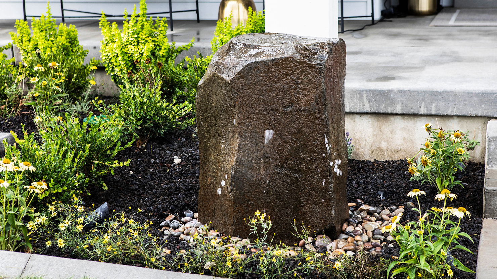

How Long Does A Landscaping Project Typically Take To Complete?
Updated: Oct 21

The duration of a landscaping project can vary significantly based on several factors, including the scope of work, weather conditions, and the availability of materials and labor. Generally, a standard landscaping project can take anywhere from a few days to several weeks to complete.
In the realm of landscaping, time is often a critical factor. Homeowners eager to transform their outdoor spaces wonder, "How long will it take to see the finished result?" Let's delve into this topic to provide clarity and insight.
At Ironhills Landscaping, we recognize the importance of addressing clients' concerns about project timelines while delivering exceptional landscaping services.
Key Takeaways:
Landscaping projects vary in duration depending on factors such as scope, weather, material availability, and labor.
Homeowners should communicate openly with their landscaping contractor to understand the projected timeline and any potential delays.
Flexibility and patience are essential virtues during the landscaping process.
Factors Affecting Project Duration
Scope of Work: The complexity and size of the project play a significant role in determining the timeline. A simple garden makeover may take less time compared to a complete backyard overhaul.
Weather Conditions
Unpredictable weather can cause delays, especially for outdoor projects. Rain, extreme heat, or cold temperatures may hinder progress and extend the timeline.
Material Availability
Procuring materials like plants, stones, and pavers can affect project timelines. Delays in obtaining necessary materials may prolong the completion date.
Labor Availability
The availability of skilled laborers can impact project timelines. High demand or labor shortages may lead to scheduling delays.
Tips for Planning a Successful Landscaping Project
Planning is the cornerstone of any successful landscaping project. Without proper planning, even the most well-intentioned project can encounter delays and setbacks. Here are some essential tips to help you plan your landscaping project effectively:
Define Your Goals
Start by clearly defining your objectives for the project. Whether you want to create a relaxing oasis, enhance curb appeal, or improve functionality, having a clear vision will guide the entire process.
Assess Your Space
Evaluate your outdoor space to understand its current layout, features, and limitations. Consider factors such as sunlight exposure, soil type, drainage issues, and existing vegetation.
Set a Realistic Budget
Determine how much you're willing to invest in your landscaping project and allocate funds accordingly. Be sure to account for both material costs and labor fees to avoid overspending.
Research Design Ideas
Gather inspiration from landscaping magazines, websites, and social media platforms. Create a vision board or sketch out your ideas to communicate your preferences to your landscaper.
Choose the Right Plants
Select plants that thrive in your local climate and soil conditions. Consider factors such as maintenance requirements, growth habits, and aesthetic appeal when choosing plants for your landscape.
Consider Long-Term Maintenance
Think about the long-term maintenance needs of your landscaped area. Choose low-maintenance plants and materials to minimize upkeep and ensure longevity.
Hire Qualified Professionals
Don't underestimate the value of hiring a professional landscaper. Look for experienced, licensed professionals with a proven track record of delivering quality results.
Obtain Necessary Permits
Depending on the scope of your project, you may need to obtain permits from your local municipality. Check with your landscaper to ensure compliance with local regulations.
Communicate Openly
Maintain open communication with your landscaper throughout the project. Discuss timelines, budget constraints, and any changes or concerns that arise.
Plan for Contingencies
Anticipate potential challenges and have a contingency plan in place. Whether it's unexpected weather delays or supply shortages, being prepared will help keep your project on track.
By following these tips, you can ensure a smooth and successful landscaping project that enhances the beauty and functionality of your outdoor space.
The Importance of Hiring a Professional Landscaper
While DIY landscaping projects may seem appealing, there are several compelling reasons to enlist the services of a professional landscaper. Here's why hiring a professional is worth considering:
Expertise and Experience
Professional landscapers bring years of expertise and experience to the table. They understand the nuances of landscaping design, construction, and maintenance, ensuring high-quality results.
Industry Knowledge
Landscaping professionals stay updated on the latest industry trends, techniques, and materials. They can recommend innovative solutions and design ideas tailored to your specific needs and preferences.
Access to Resources
Professional landscapers have access to a wide range of resources, including specialized tools, equipment, and materials. They can source high-quality materials at competitive prices, saving you time and money.
Time-Saving
Hiring a professional landscaper frees up your time to focus on other priorities. Landscaping projects can be time-consuming and labor-intensive, but professionals have the skills and manpower to get the job done efficiently.
Customized Solutions
Every landscape is unique, and professional landscapers understand the importance of customizing solutions to suit your individual needs and preferences. Whether you have a small urban garden or a sprawling estate, they can create a tailored plan that maximizes your outdoor space.
Enhanced Property Value
A well-designed and maintained landscape can significantly enhance the value of your property. Professional landscapers can help you maximize your investment by creating a visually appealing and functional outdoor space that attracts potential buyers.
Peace of Mind
Hiring a professional landscaper gives you peace of mind knowing that your project is in capable hands. From concept to completion, they handle every aspect of the project with professionalism and attention to detail.
In summary, while DIY landscaping projects can be tempting, hiring a professional landscaper offers numerous benefits, including expertise, industry knowledge, access to resources, time-saving, customized solutions, enhanced property value, and peace of mind. When it comes to transforming your outdoor space, investing in professional expertise is well worth it.
FAQs
How much does landscaping typically cost?
Landscaping costs vary depending on factors such as project size, materials used, and labor fees. It's best to consult with a landscaping contractor for an accurate estimate tailored to your specific project.
Can I start landscaping in any season?
While spring and fall are ideal seasons for landscaping due to mild temperatures, certain tasks can be performed year-round. A professional landscaper can advise on the best timing for your project.
Do I need a permit for landscaping projects?
Permit requirements vary by location and the scope of the project. It's essential to check local regulations and obtain any necessary permits before commencing work.
How do I maintain my landscaped yard after completion?
Regular maintenance is key to preserving the beauty of your landscaped yard. This includes watering, fertilizing, pruning, and seasonal clean-up. Your landscaper can provide guidance on proper maintenance practices.
What sets Ironhills Landscaping apart from other companies?
At Ironhills Landscaping, we distinguish ourselves through our dedication to quality craftsmanship, personalized service, and attention to detail. With a passion for creating outdoor havens, we strive to exceed our clients' expectations every step of the way.
Transform Your Outdoor Oasis with Ironhills Landscaping
Embarking on a landscaping project is an exciting endeavor that requires careful planning and execution. At Ironhills Landscaping, we're committed to making your outdoor dreams a reality. With our expertise and dedication, let's work together to create a beautiful and functional outdoor space that you'll cherish for years to come.
Elevate Your Outdoor Living Experience with Ironhills Landscaping: Contact Us Now!
Ready to embark on your landscaping journey? Contact Ironhills Landscaping today to schedule a consultation. Let's transform your outdoor space into a breathtaking oasis that reflects your style and personality.
Recent Posts


If you live in Lehi, there's a good chance your yard isn't perfectly flat. Newer neighborhoods near Traverse Mountain, homes along the foothills, and lots that step down toward the street all share th